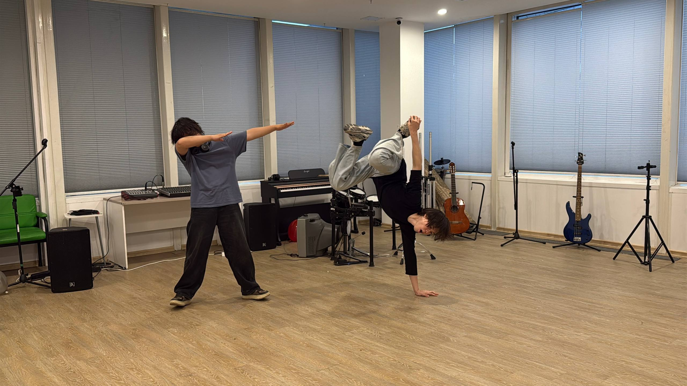
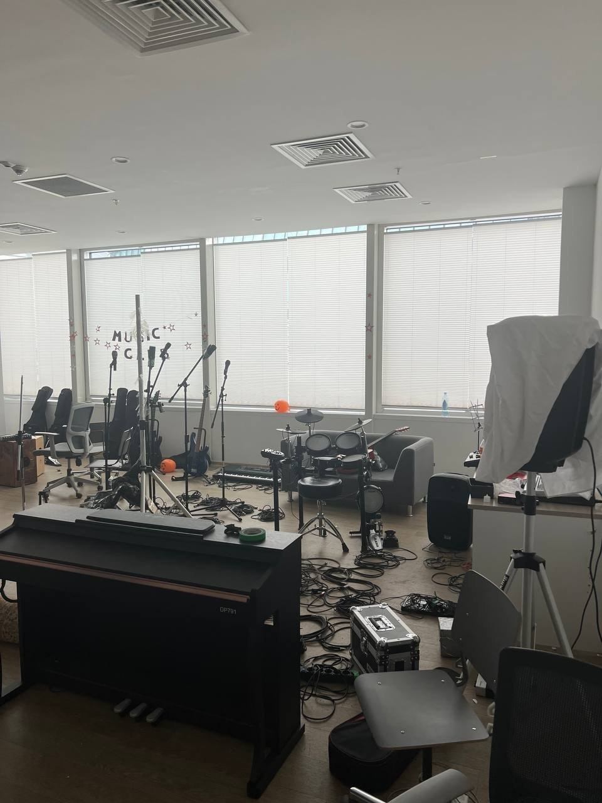
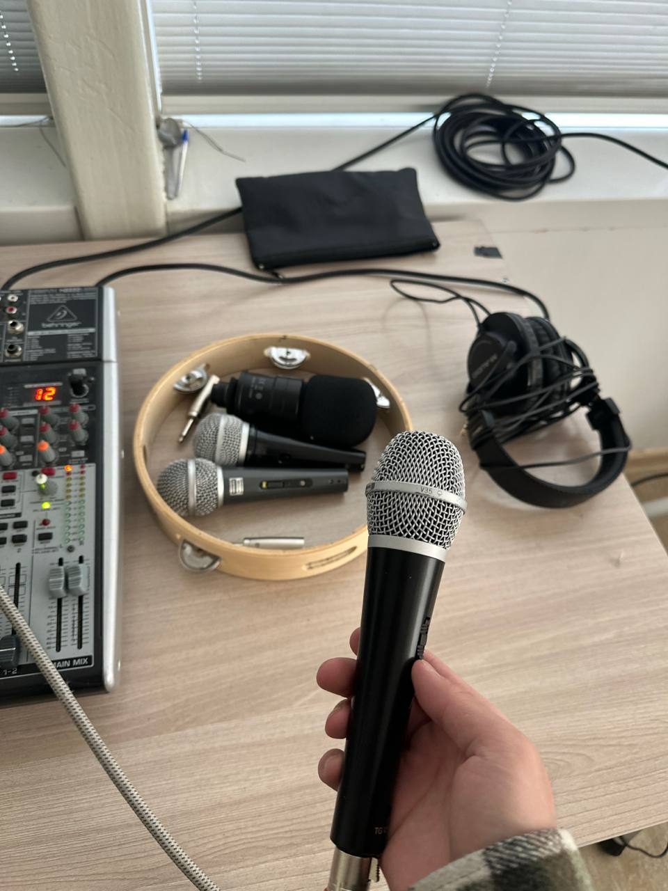

Instrument Collection
String Instruments
- Yamaha F310 acoustic guitar
- Fender Squier Stratocaster electric guitar
Keyboard Instruments
- Yamaha PSR-E373 61-key digital keyboard
Percussion Instruments
- 5-piece standard drum kit with cymbals
This page provides information about the musical equipment provided in the University Music Club. The aim of this part of the page is to illustrate what students may use during rehearsals, practices, shows, and other activities of the club. Information that will be provided on this page should be relevant to the actual checkup of the musical equipment of the club. In this way, this page may help students in finding out what kind of equipment is provided before attending a rehearsal or performing. The club may have various kinds of musical equipment and audio devices. For this reason, each piece of equipment should be described depending on its actual usage. The photos presented on this page should reflect the actual atmosphere of the club. Below you may find the inventory table of the verified musical equipment. Some pieces of equipment may be used jointly by the students, while others may be intended for particular activities only.
The band maintains an assortment of instruments that is small but effective for rehearsals, accompaniment, song writing, and live shows.


The club's audio equipment supports rehearsals, recording, communication, and live sound.
The following audio equipment may be used by the club: microphones, loudspeakers, mixing desks, amplifiers, cables, etc.

Table below is designed to capture the verified inventory of the club.
| Equipment | Type | Quantity | Use |
|---|---|---|---|
| Yamaha F310 | Acoustic guitar | 2 | Rehearsal, songwriting |
| Yamaha PSR-E373 | Digital keyboard | 1 | Accompaniment, rehearsal |
| Shure SM58 | Microphone | 2 | Vocals, live performance |
| Behringer Xenyx Q802USB | Mixer | 1 | Live sound, recording |
| Yamaha DBR12 | PA speaker | 2 | Live performance |
For more information, visit the official Music Club website.